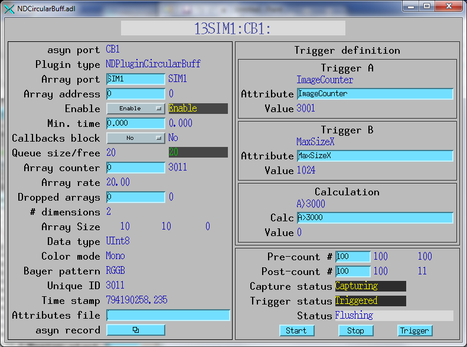

NDPluginCircularBuff is a triggering plugin. It receives NDArrays from a plugin or driver and checks whether a user-defined trigger condition has been met. The trigger condition is based on the values of up to two NDAttributes attached to the NDArray. The attribute values are used in a general calculation expression that defines the trigger condition. Once the trigger condition is detected the plugin outputs the triggering NDArray, along with a configurable number of pre- and post-trigger NDArrays. Triggering can also be performed using a soft trigger, controlled from the "Trigger" database record.
Acquisition is started by setting the "NDCircBuffControl" parameter to non-zero (via the "Capture" record in the associated database). The plugin then copies all received NDArrays to its ring buffer, wrapping once the specified pre-count is reached.
Once the trigger is detected, the plugin will immediately output all the NDArrays stored in the ring buffer in order from oldest to newest (by calling doCallbacksGenericPointer). After the trigger is set, new NDArrays will then be output as soon as they arrive, until the post-count is reached. The plugin will then stop buffering or outputting NDArrays until it is retarted via NDCircBuffControl. The plugin will also automatically restart if the following condition is true:
(PresetTriggerCount == 0) || ((PresetTriggerCount > 0) && (ActualTriggerCount < PresetTriggerCount)))
NDPluginCircularBuff inherits from NDPluginDriver. The NDPluginCircularBuff class documentation describes this class in detail.
NDPluginCircularBuff defines the following parameters. It also implements all of the standard plugin parameters from NDPluginDriver . The EPICS database NDCircularBuff.template provides access to these parameters, listed in the following table.
| Parameter Definitions in NDPluginCircularBuff.h and EPICS Record Definitions in NDCircularBuff.template | ||||||
| Parameter index variable | asyn interface | Access | Description | drvInfo string | EPICS record name | EPICS record type |
|---|---|---|---|---|---|---|
| NDCircBuffControl | asynInt32 | r/w | Toggle triggering & buffering on/off | CIRC_BUFF_CONTROL |
$(P)$(R)Capture
$(P)$(R)Capture_RBV |
busy
bi |
| NDCircBuffStatus | asynOctet | r/o | Plugin status feedback string | CIRC_BUFF_STATUS | $(P)$(R)StatusMessage | stringin |
| NDCircBuffPreTrigger | asynInt32 | r/w | Number of pre-trigger NDArrays to store | CIRC_BUFF_PRE_TRIGGER |
$(P)$(R)PreCount
$(P)$(R)PreCount_RBV |
longout
longin |
| NDCircBuffPostTrigger | asynInt32 | r/w | Number of post-trigger NDArrays to output | CIRC_BUFF_POST_TRIGGER |
$(P)$(R)PostCount
$(P)$(R)PostCount_RBV |
longout
longin |
| NDCircBuffTriggerA | asynOctet | r/w | Name of the NDAttribute for trigger A. | CIRC_BUFF_TRIGGER_A |
$(P)$(R)TriggerA
$(P)$(R)TriggerA_RBV |
stringout
stringin |
| NDCircBuffTriggerB | asynOctet | r/w | Name of the NDAttribute for trigger B | CIRC_BUFF_TRIGGER_B |
$(P)$(R)TriggerB
$(P)$(R)TriggerB_RBV |
stringout
stringin |
| NDCircBuffTriggerAVal | asynFloat64 | r/o | Value of the NDAttribute for trigger A. The attribute defined by TriggerA must have a numeric datatype, not string. This value field only updates when the plugin is capturing (Capture=1). | CIRC_BUFF_TRIGGER_A_VAL | $(P)$(R)TriggerAVal | ai |
| NDCircBuffTriggerBVal | asynFloat64 | r/o | Value of the NDAttribute for trigger B. The attribute defined by TriggerB must have a numeric datatype, not string. This value field only updates when the plugin is capturing (Capture=1). | CIRC_BUFF_TRIGGER_B_VAL | $(P)$(R)TriggerBVal | ai |
| NDCircBuffTriggerCalc | asynOctet | r/w | The calculation expression for the trigger. This can be any valid expression accepted by the EPICS calc routines in libCom, and used for example in the EPICS calc record. The maximum length of the expression is currently set to MAX_INFIX_SIZE (100) defined in postfix.h in EPICS base. | CIRC_BUFF_TRIGGER_CALC |
$(P)$(R)TriggerCalc $(P)$(R)TriggerCalc_RBV |
waveform
waveform |
| NDCircBuffTriggerCalcVal | asynFloat64 | r/o | Value of the calculated expression. This value field only updates when the plugin is capturing (Capture=1). | CIRC_BUFF_TRIGGER_CALC_VAL | $(P)$(R)TriggerCalcVal | ai |
| NDCircBuffPresetTriggerCount | asynInt32 | r/w | Controls how many times the plugin can be triggered before capture stops. The default is 1, so the plugin will only trigger once and then stop capturing. If this is 0 then the plugin will continue to retrigger forever until it is stopped by setting Capture=0. | CIRC_BUFF_PRESET_TRIGGER_COUNT |
$(P)$(R)PresetTriggerCount $(P)$(R)PresetTriggerCount_RBV |
longout
longin |
| NDCircBuffActualTriggerCount | asynInt32 | r/o | The number of triggers that have occurred since capture was last started. | CIRC_BUFF_ACTUAL_TRIGGER_COUNT | $(P)$(R)ActualTriggerCount_RBV | longin |
| NDCircBuffCurrentImage | asynInt32 | r/o | Number of NDArrays currently stored in ring buffer | CIRC_BUFF_CURRENT_IMAGE | $(P)$(R)CurrentQty_RBV | longin |
| NDCircBuffPostCount | asynInt32 | r/o | Number of post-trigger NDArrays emitted so far | CIRC_BUFF_POST_COUNT | $(P)$(R)PostTriggerQty_RBV | longin |
| NDCircBuffSoftTrigger | asynInt32 | r/w | Set to non-zero to force a trigger on next NDArray | CIRC_BUFF_SOFT_TRIGGER | $(P)$(R)Trigger | busy |
| NDCircBuffTriggered | asynInt32 | r/o | Current trigger status | CIRC_BUFF_TRIGGERED | $(P)$(R)Trigger_RBV | bi |
Triggering using NDArray attributes is quite powerful. Two NDArray attributes can be used for triggering. The names of these attributes are defined with the TriggerA and TriggerB records. The values of these attributes must be numeric, not string. The TriggerCalc record defines a calculation expression that uses that same syntax as the EPICS calc record. If the expression evaluates to a non-zero value then the plugin will be triggered. The variables in the expression are defined as follows:
The following are some example expressions. They assume that the NDPluginCircularBuff plugin is getting its data from the NDPluginStats plugin and that the NDPluginStats plugin is using an attributes XML file containing the following lines:
<attribute name="MaxValue" type="PARAM" source="MAX_VALUE" datatype="DOUBLE" description="Maximum value" /> <attribute name="CentroidX" type="PARAM" source="CENTROIDX_VALUE" datatype="DOUBLE" description="Centroid X position" />
Assume that TriggerA is set to MaxValue and TriggerB is set to CentroidX.
The following are examples of some expressions that can then be used for triggering:
| Expression | Description |
|---|---|
| A<200 | Intensity of brightest pixel is less than 200 |
| A>1.5*H && E>50;H:=A | Intensity of brightest pixel (A) is more than 150% of the value in the previous image (H) and there are at least 50 images in the circular buffer. Set H to A after evaluation. |
| B<300 || A>100 | X centroid is less than pixel 300 or the maximum intensity is greater than 100. |
If the TriggerA or TriggerB attrbutes do not exist, or if they are non-numeric datatype then the TriggerAVal or TriggerBVal is set to NaN (Not a Number). If that value is used in the calculation expression then in some cases the TriggerCalcVal will also be NaN (for example A+B will be NaN). If TriggerCalcVal is NaN or Infinity then the expression is treated as 0 and the trigger will not occur. However, some expressions involving NaN arguments do not result in a NaN result and could result in false triggers. For example (A&&B) evaluates as 1 when both A and B are NaN. To avoid this problem the isnan() and isinf() functions can be used in the expression.
It is possible to continuously output individual NDArrays that match the trigger condition. To do this set PreCount=0, PostCount=1, and PresetTriggerCount=0.
The following is the MEDM screen that provides access to the parameters in NDPluginDriver.h and NDPluginCircularBuff.h through records in NDPluginBase.template and NDCircularBuff.template.

The NDPluginCircularBuff plugin is created with the NDCircularBuffConfigure command, either from C/C++ or from the EPICS IOC shell.
NDCircularBuffConfigure(const char *portName, int queueSize, int blockingCallbacks,
const char *NDArrayPort, int NDArrayAddr,
int maxBuffers, size_t maxMemory)
For details on the meaning of the parameters to this function refer to the detailed documentation on the NDCircularBuffConfigure function in the NDPluginCircularBuff.cpp documentation and in the documentation for the constructor for the NDPluginCircularBuff class.
In particular, note that maxBuffers constrains the size of the ring buffer - the plugin will discard any changes to the pre- or post count if this would result in (pre-count + post-count) exceeding maxBuffers.